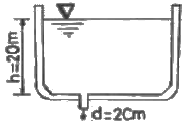
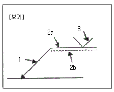
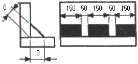
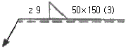
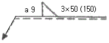
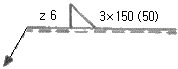
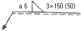

배관기능장 (2016-04-02 기출문제)
1과목: 임의구분
1. 배관 내의 유속이 2m/s 일 때, 수격작용에 의해 발생하는 수압은 약 몇 kgf/cm2 정도인가?
- 2.8
- 28
- 280
- 2800
(정답률: 76%)

2. 다음 중 윌리암 하젠(William-hazen) 공식에 의한 급수관의 유량 선도와 가장 거리가 먼 것은?
- 유량(L/min)
- 마찰손실(mmAq/m)
- 유속(m/s)
- 평균 급수 유속(m/s)
(정답률: 77%)
3. 다음 중 배관설비 유지관리와 가장 거리가 먼 것은?
- 밸브류 및 배관부속기기의 점검과 보수
- 배관의 점검과 보수
- 배관설계 및 시공
- 부식과 방식
(정답률: 91%)
4. 가스배관 이음방법 중 관을 그대로 이음에 삽입하여 잠김 너트 등을 사용한 접합이음으로서 비교적 강도가 있어 지반의 침하 등에 강한 이음은?
- 나사 이음
- 플랜지 이음
- 플레어 이음
- 기계적 이음
(정답률: 81%)
5. 고압가스 재해에 대한 설명으로 틀린 것은?
- 가연성의 기체가 공기 속에서 부유하다가 공기의 산소 분자와 접촉하면 폭발할 수 있다.
- 액화 석유가스와 같이 공기보다 무거운 가스는 누설되면 확산되어 낮은 곳에는 고이지 않는다.
- 일산화탄소는 가연성 가스로서 공기와 공존할 때는 폭발할 수 있다.
- 아세틸렌은 공기나 산소와 같은 지연성 가스와 공존 하지 않아도 폭발이 일어날 수 있다.
(정답률: 89%)
6. 화학 세정용 약제 중 알칼리성 약제로 맞는 것은?
- 트리클로에틸렌
- 설파인산
- 4염화탄소
- 암모니아
(정답률: 82%)
7. 다음 중 유틸리티(utility) 배관이 아닌 것은?
- 각종압력의 증기 및 응축수 배관
- 냉각세정용 유체 공급관
- 연료유 및 연료가스 공급관
- 유닛 내 열교환기 등의 기기에 접속되는 원료운반 배관
(정답률: 78%)
8. 배관용 공기(air)기구를 사용 시 안전수칙으로 틀린 것은?
- 처음에는 천천히 열고, 일시에 전부 열지 않는다.
- 기구 등의 반동으로 인한 재해에 항상 주의한다.
- 공기기구를 사용할 때는 방진 안경을 사용한다.
- 활동부에는 항상 기름 또는 그리스가 없도록 깨끗이 닦아준다.
(정답률: 97%)
9. 전기식 자동제어 시스템에서 온도조절기의 조절부에 사용되는 것으로 가장 거리가 먼 것은?
- 수은 스위치
- 스냅 스위치
- 다이어프램
- 밸런싱 릴레이
(정답률: 74%)
10. 자동제어장치에서 제어 편차를 감소시키기 위한 조절계의 동작에는 연속동작과 불연속동작이 있다. 다음 중 불연속동작에 해당되는 것은?
- 2위치 동작
- 비례 동작
- 적분 동작
- 미분 동작
(정답률: 87%)
11. 공조 시스템에서 토출되는 공기온도가 매우 높아지거나 낮아지는 것을 방지하기 위하여 또는 전열기의 과열방지, 외기의 이상저하에 의한 코일의 동과 등을 방지하기 위하여 적용되는 제어방식은?
- 위치비례제어
- 플로팅제어
- 리미트제어
- 최소개도제어
(정답률: 86%)
12. 공기조화 설비방식 중 패키지(package) 방식의 특징으로 틀린 것은?
- 건물의 일부만을 냉방하는 경우 손쉽게 이용할 수 있다.
- 유닛을 배치할 필요가 없으므로 바닥의 이용도가 높다.
- 중앙기계실 냉동기 설치방식에 비해 공사비가 적게 들며 공사기간도 짧다.
- 실온제어의 편차가 크고 온ㆍ습도 제어의 정도가 낮다.
(정답률: 68%)
13. LPG 가스 배관 시 주의사항으로 옳은 것은?
- 배관재료로 내압 및 내유성 재료는 사용할 수 없다.
- 옥외 저압부 배관과 조정기를 접속하기 위해 사용되는 고무관의 길이는 50cm 이상 되어야 한다.
- 배관 및 고무관류는 가급적 이음부를 없게 하고 누설 시 탐지 및 수리가 쉽도록 배관한다.
- 나사이음 배관 시 페인트를 사용하여 패킹하여야 한다.
(정답률: 80%)
14. 다음 중 가스 용접작업을 하기 위한 가장 적절한 장소는?
- 기름이 있는 건조한 곳
- 직사광선을 받는 밀폐된 곳
- 습도가 높고 고압가스가 있는 곳
- 가연성 물질이 없고 통풍이 잘되는 곳
(정답률: 96%)
15. 대형 보일러의 설치ㆍ시공시 급수 장치에 관한 설명으로 틀린 것은?
- 급수관에는 보일러에 인접하여 급수밸브와 체크밸브를 설치하여야 한다.
- 급수능력은 최대 증발량의 10% 이상이어야 한다.
- 급수의 흐름 방향에 맞게 급수밸브를 설치한다.
- 자동급수 조절기를 설치할 때에는 필요에 따라 즉시 수동으로 변경할 수 있는 구조로 한다.
(정답률: 84%)
16. 화학 배관 설비에 사용되는 재료의 구비조건으로 틀린 것은?
- 접촉 유체에 대한 내식성이 클 것
- 고온, 고압에 대한 기계적 강도가 클 것
- 상용 상태에서의 크리프(creep)강도가 작을 것
- 저온 등에서도 재질의 열화(劣化)가 없을 것
(정답률: 86%)
17. 원심식 송풍기의 날개 직경이 450mm이다. 송풍기 번호(NO)는?
- NO.2
- NO.3
- NO.4
- NO.5
(정답률: 69%)
18. 배관작업 시 안전사항으로 옳은 것은?
- 토치램프 또는 가열토치를 사용하여 관 가열굽힘 작업 시 가능한 한 오래 가열 할수록 좋다.
- 주철관의 소켓 접합 시공 시 용해 납은 3회로 나누어 주입한다.
- 높은 곳에서 배관 작업 시 사다리를 사용할 경우에는 사다리 각도를 지면에서 30° 이내로 하고 미끄러지지 않도록 설치한다.
- 배관 작업 중 볼트 및 너트를 조일 때에는 몸의 중심을 잘 맞추고 스패너는 볼트가 맞는 것을 사용한다.
(정답률: 85%)
19. 공정제어에서 오차의 신호를 받아 제어 동작을 판단한 후 처리하는 부분은?
- 공정제어용 검출기
- 전송기
- 조절기
- 벨로스
(정답률: 86%)
20. 온수난방에서 개방식 팽창탱크의 용량은 온수 팽창량의 몇 배가 가장 적당한가?
- 1.5~2.5배
- 3.5~4.5배
- 5.5~6.5배
- 7.5~8.5배
(정답률: 90%)
2과목: 임의구분
21. 양조공장, 화학공장에서의 알콜, 맥주 등의 수송관 재료로 가장 적합한 것은?
- 주석관
- 수도용 주철관
- 배관용 탄소강관
- 일반 구조용 강관
(정답률: 84%)
22. 증기 트랩에서 오픈(open)트랩이라고도 하며, 공기가 거의 배출되지 않으므로 열동식 트랩을 병용하여 사용 하는 트랩은 어느 것인가?
- 상향식 버킷 트랩
- 온도조절 트랩
- 플러스 트랩
- 충격식 트랩
(정답률: 82%)
23. 글랜드 패킹에 속하지 않는 것은?
- 플라스틱 패킹
- 메커니컬실
- 일산화연
- 메탈 패킹
(정답률: 77%)
24. 비중이 0.92~0.96 정도로 염화비닐관보다 가볍고 -60℃에서도 취화하지 않아 한냉지 배관에 적절한 관은?
- 동관
- 폴리에틸렌관
- 연관
- 경질염화비닐관
(정답률: 75%)
25. 화학약품에 강하고 내유성이 크며 내열범위가 -30~130℃인 증기, 기름 약품 배관에 사용하는 나사용 패킹으로 적합한 것은?
- 페인트
- 메커니컬 실
- 일산화연
- 액상 합성수지
(정답률: 80%)
26. 관의 회전을 방지하고 축 방향의 이동을 허용하는 안내 역할을 하며, 축과 직각방향의 이동을 구속하는데 사용하는 것은?
- 행거
- 스토퍼
- 가이드
- 서포트
(정답률: 82%)
27. 다음 중 체크밸브의 종류로 틀린 것은?
- 스윙 체크밸브
- 나사조임 체크밸브
- 버터 플라이 체크밸브
- 앵글 체크밸브
(정답률: 68%)
28. 납관(연관)이음에 사용되는 용융온도가 232℃인 플라스턴 합금의 주요 성분 비율로 옳은 것은?
- Pb 30%+Sn70%
- Pb 40%+Sn60%
- Pb 50%+Sn50%
- Pb 60%+Sn40%
(정답률: 76%)
29. 염화비닐관의 단점을 설명한 것 중 틀린 것은?
- 열팽창률이 크기 때문에 온도변화에 대한 신축이 심하다.
- 50℃ 이상의 고온 또는 저온 장소에 배관하는 것은 부적당하다.
- 용제와 방부제(크레오소트액)에 강하나 파이프접착제에는 침식된다.
- 자온에 약하며 한냉지에서는 외부로부터 조금만 충격을 주어도 파괴되기 쉽다.
(정답률: 79%)
30. 주철관의 내벽에 모르타르 처리하여 방청작용을 하도록 한 관은?
- 배수용 주철관
- 덕타일 주철관
- 수도용 이형관
- 원심력 모르타르 라이닝 주철관
(정답률: 86%)
31. 스트레이너(strainer)는 밸브, 기기 등의 앞에 설치하여 관내의 불순물을 제거하는데 사용하는 여과기를 말한다. 스트레이너의 형상에 따른 종류에 해당하지 않는 것은?
- S형
- Y형
- U형
- V형
(정답률: 86%)
32. 보일러의 수관, 연관, 화학 및 석유공업의 열교환기 등에 사용하는 열전달용 강관의 기호는?
- SPA
- STA
- STBH
- SPHT
(정답률: 69%)
33. 유량계 설치법에 대한 설명으로 잘못된 것은?
- 차압식 유량계의 오리피스는 원칙적으로 수직배관에 설치한다.
- 차압식 유량계의 노즐 취출방향은 액체인 경우는 하향, 기체일 경우는 상향으로 한다.
- 증기배관에는 증기가 유량계에 유입하는 것을 방지하고, 차압에 대해 일정한 액주의 높이를 유지할 수 있도록 콘덴서를 설치한다.
- 체적식 유량계와 면적식 유량계는 조작 및 보수가 쉽도록 설치한다.
(정답률: 78%)
34. 온수 온돌 난방, 코일용으로 많이 사용되며, 엑셀 온돌 파이프하고도 하는 관은?
- 염화비닐관
- 폴리프로필렌관
- 폴리부틸렌관
- 가교화폴리에틸렌관
(정답률: 80%)
35. 벤더에 의한 관 굽히기의 도중에 관이 파손되었다면 그 원인으로 가장 적합한 것은?
- 받침쇠가 너무 들어갔다.
- 굽힘형이 주축에서 빗나가 있다.
- 굽힘 반경이 너무 작다.
- 재질이 부드럽고 두께가 얇다.
(정답률: 85%)
36. 동관의 끝부분을 진원으로 교정할 때 사용하는 공구는?
- 플레어링 툴
- 봄블
- 사이징 툴
- 익스팬더
(정답률: 87%)
37. 용접부의 파괴시험 검사 중 기계적 시험방법이 아닌 것은?
- 부식시험
- 피로시험
- 굽힘시험
- 충격시험
(정답률: 85%)
38. 다음 중 비중이 공기보다 커서 바닥으로 가라앉는 가스는?
- 프로판
- 아세틸렌
- 수소
- 메탄
(정답률: 86%)
39. 폴리에틸렌관의 이음방법 중 관끝의 바깥쪽과 이음관의 안쪽을 동시에 가열 용융하여 이음하는 방법인 것은?
- 인서트 이음
- 용착 슬리브 이음
- 코어 플랜지 이음
- 테이퍼 조인트 이음
(정답률: 86%)
40. 전기 저항 용접법 중 겹치기 용접을 할 수 없는 용접법은?
- 스폿용접
- 심용접
- 플래시용접
- 프로젝션용접
(정답률: 63%)
3과목: 임의구분
41. 0℃의 얼음 1kg을 100℃의 포화증기로 만드는데 필요한 열량은 약 얼마인가? (단, 얼음의 융해열은 333.6kJ/kg, 물의 비열은 4.19kJ/kgㆍK, 물의 증발잠열은 2256.7kJ/kg이다.)
- 2255kJ
- 2590kJ
- 2674kJ
- 3009kJ
(정답률: 54%)
42. 콘크리트관의 콤포 이음 시 시멘트와 모래의 배합비와 수분의 양으로 가장 적합한 것은?
- 1:2이고 수분의 양은 약 17%
- 1:1이고 수분의 양은 약 17%
- 1:2이고 수분의 양은 약 45%
- 1:1이고 수분의 양은 약 45%
(정답률: 85%)
43. 그림과 같은 높이 20m인 커다란 저수탱크 밑에 구멍(지름 2cm)이 생겨 탱크 속의 물이 유출되고 있다. 이 때 유량 (m3/s)은 약 얼마인가? (단, 유출에 의한 높이의 변화를 무시하며 유량계수 Cv=1이다.)

- 6.2×10-3
- 1.98×10-3
- 6.2×103
- 1.98×103
(정답률: 54%)
44. 주철관의 기계식 이음(mechanical joint)의 특징이 아닌 것은?
- 기밀성이 좋다.
- 고압에 대한 저항이 크다.
- 온도 변화에 따른 신축이 자유롭다.
- 플랜지 접합과 소켓 접합의 장점을 취한 것이다.
(정답률: 69%)
45. 각종 관 작업 시 필요한 공구 및 기계를 연결한 것 중 틀린 것은?
- PVC관 : 열풍용접기, 리머
- 동관 : 턴핀, 익스팬더(expander)
- 주철관:링크형 파이프커터, 클립
- 스테인리스강관:TIG 용접기, 전용 압착공구
(정답률: 70%)
46. 강관을 4조각내어 중심각이 90°마이터관을 만들려할 때 절단각은 몇 도(°) 인가?
- 7
- 11
- 15
- 22
(정답률: 80%)
47. 배관설비 라인 인덱스의 장점으로 가장 거리가 먼 것은?
- 배관시공 시 배관재료를 정확히 선정할 수 있다.
- 배관공사의 관리 및 자재 관리에 편리하다.
- 배관 내의 유체 마찰이 감소된다.
- 배관 기기장치의 운전계획, 운전교육에 편리하다.
(정답률: 84%)
48. 단면을 표시하는 방법에 대한 설명으로 틀린 것은?
- 단면을 나타내는 해칭(hatching)은 주된 중심선 또는 단면도의 주된 외형선에 대하여 45° 경사지게 등간격으로 가는 선으로 그린다.
- 해칭의 간격은 단면의 크기와 무관하게 2~3mm 등간격으로 그린다.
- 해칭 대신에 연필 또는 흑색 색연필을 이용하여 스머징(smudging)을 하여도 좋다.
- 인접한 단면의 해칭은 선의 방향을 바꾸든지, 선의 각도 또는 선의 간격을 바꾸어서 기입한다.
(정답률: 67%)
49. 배관 설치 시 배관의 높이 치수 기입방법 중에서 건물의 바닥면을 기준으로 표시하는 기호는?
- EL
- GL
- FL
- OL
(정답률: 79%)
50. 평면, 정면, 측면을 하나의 투상면 위에 동시에 볼 수 있도록 그린 투상도는?
- 사 투상도
- 투시 투상도
- 정 투상도
- 등각 투상도
(정답률: 83%)
51. 2개 이상의 관을 동일한 지지대 위에 나란히 배관할 경우 지면의 높이를 기준면으로 하고 관밑면까지 높이를 3000mm라 할 때, 치수 기입법으로 적합한 것은?
- EL+3000 BOP
- EL+3000 TOP
- GL+3000 BOP
- GL+3000 TOP
(정답률: 83%)
52. 보기의 용접기호에 관한 설명으로 틀린 것은?

- I : 화살표
- 2a : 기준선(실선)
- 2b : 동일선(파선)
- 3 : 용접기호
(정답률: 72%)
53. KS 배관의 간략도시방법에서 사용하는 선의 종류별 호칭방법에 따른 선의 적용으로 틀린 것은?
- 가는 1점 쇄선 : 바닥, 벽, 천장
- 굵은 파선 : 다른 도면에 명시된 유선
- 가는 실선 : 해칭, 인출선, 치수선
- 굵은 실선 : 유선 및 결합 부품
(정답률: 64%)
54. 그림과 같은 구조물을 필릿 단속 용접하기 위한 도면에 표기되는 용접기호로 바르게 기입되어 있는 것은?





(정답률: 72%)
55. 작업측정의 목적 중 틀린 것은?
- 작업개선
- 표준시간 설정
- 과업관리
- 요소작업 불할
(정답률: 70%)
56. 계수 규준형 샘플링 검사의 OC 곡선에서 좋은 로트를 합격시키는 확률을 뜻하는 것은? (단, α는 제1종과오, β는 제2종과오이다.)
- α
- β
- 1-α
- 1-β
(정답률: 80%)
57. 어떤 작업을 수행하는데 작업소요시간이 뻐른 경우 5시간, 보통이면 8시간, 늦으면 12시간 걸린다고 예측되었다면, 3점 견적법에 의한 기대 시간치와 분산을 계산하면 약 얼마인가?
- te=8.0, σ2=1.17
- te=8.2, σ2=1.36
- te=8.3, σ2=1.17
- te=8.3, σ2=1.36
(정답률: 48%)
58. 계량값 관리도에 해당되는 것은?
- c 관리도
- u 관리도
- R 관리도
- np 관리도
(정답률: 60%)
59. 일반적으로 품질코스트 가운데 가장 큰 비율을 차지하는 것은?
- 평가코스트
- 실패코스트
- 예방코스트
- 검사코스트
(정답률: 81%)
60. 정규분포에 관한 설명 중 틀린 것은?
- 일반적으로 평균치가 중앙값보다 크다.
- 평균을 중심으로 좌우대칭의 분포이다.
- 대체로 표준편차가 클수록 산포가 나쁘다고 본다.
- 평균치가 0이고 표준편차가 1인 정규분포를 표준정규분포라 한다.
(정답률: 61%)
수압 = 밀도 × 중력가속도 × 유속의 제곱 ÷ 2
여기서, 밀도는 물의 밀도인 1000kg/m3 이고, 중력가속도는 9.8m/s2 입니다. 따라서,
수압 = 1000 × 9.8 × 22 ÷ 2 = 19600 ÷ 2 = 9800 Pa
1 Pa는 1 N/m2 이므로, 9800 Pa를 kgf/cm2로 변환하면 다음과 같습니다.
9800 ÷ 98066.5 = 0.1 kgf/cm2
따라서, 정답은 "28"이 아닌 "2.8"입니다.